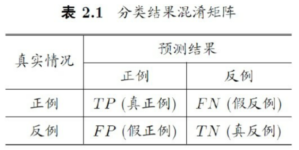
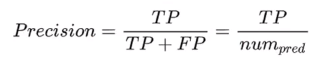
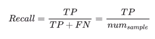
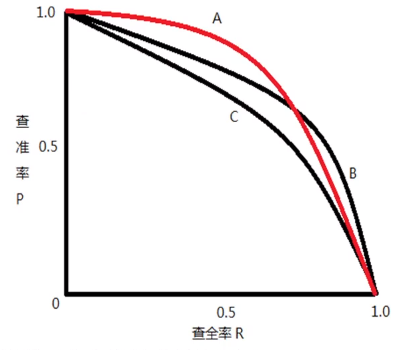
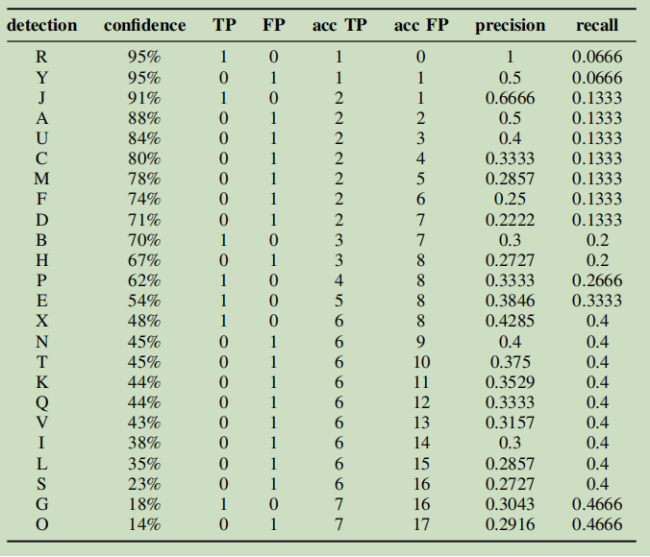
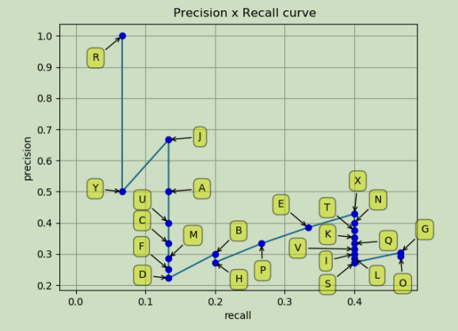

00 评价指标
目标检测中常见评价指标
这个链接总结的很好，看看这个链接：
1.目标检测的混淆矩阵
目标检测也经常会使用到机器学习中的混淆矩阵的概念，下面解释该矩阵中各项在目标检测任务中的含义

首先明确一点，混淆矩阵是用于分类任务的，这里是把
每个预测框是否属于GT作为类别。每个被预测出的bbox都是正例
(1)真正例(True Positive, TP):正样本被预测正确的数量，每个样本需满足以下条件：
- 预测类别和标签类别一致
- 预测bbox和GT的IOU大于阈值，当有多个满足条件的bbox时，选择置信度最大的为TP，其余为FP
(2)假正例(False Positive, FP):负样本被预测成正样本的数量，每个样本需满足以下条件之一：
- bbox与GT的IOU小于阈值
- 预测类别和标签类别不同
(3)假反例(False Negative, FN):正样本被预测成正负样本的数量，等价于：
- 没有别检测出的GT的个数
(4)真反例(True Negative, TN):负样本被预测为负样本的数量，需满足以下条件：
- 在目标检测中，无法计算也不关注TN
2.查准率和查全率
有了混淆矩阵后，一般都会计算这2个指标
2.1查准率

查准率就是：所有正例中预测正确的个数，在**目标检测**领域中，预测正确(IOU大于阈值、类别与GT一致)的bbox占所有预测出的bbox的比例。
==通俗的说就是：识别出的框框中正确的比例。==
查准率的局限性：加如有很多个gt，但我只预测出了1个bbox，即使查准率为1，该模型实际上也不好
2.2查全率(召回率)

查全率就是：预测正确的正例占所有真例的个数，在**目标检测**领域中，就是正确预测的bbox与gt的比例。
==通俗的说就是：正确识别的框框占所有GT框个数的比例。==
查全率的局限性：假如有10个gt，但预测出了100个bbox，虽然包含了所有的gt，但该模型实际上也不好
3.PR曲线
由于查准率和查全率各有缺点，所以需要综合考虑这两者：以查准率为纵轴，查全率为横轴绘制的曲线为PR曲线

通常情况，模型确定了，数据集确定了，那么该组数据集的查准率和查全率不都确定了吗？曲线是怎么绘制出来的？
答：通过不断改变判断模型是否为正例的阈值（IOU阈值、置信度阈值等），可以在同一组数据集上得到不同的召回率和查准率，进而就可以画出曲线了。==这个理解是错误的==
这部分参考上面的链接，大致步骤是：
- 将所有预测的bbox按置信度从大到小排序
- 累计计算当前bbox的Precision和Recall，就可以得到很多离散点
- 将这些离散点连接起来就得到了PR曲线


绘制PR曲线时必须指定IOU，这样才能够区分TP、FP那些的，所以AP后边通常得跟个数字。
4.AP
AP是Average Precision，即平均准确率，它是通过计算PR曲线下的面积得到的，它综合考虑了查准率和查全率，==反映了模型对某个类别识别的好坏==，越大越好
5.mAP
mAP是mean Average Precision，即类别平均准确率，上面的AP实际上每个类别都不同，mAP是求取平均值。==反映了模型对各个类别的平均预测能力==。